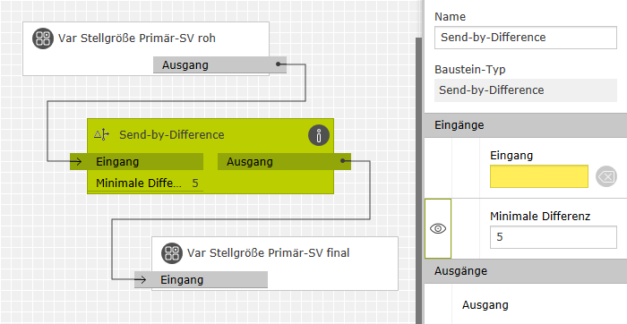

Send-by-Difference
Beschreibung

Dieser Baustein leitet das am Eingang empfangene numerische Telegramm genau dann an den Ausgang weiter, wenn der Telegrammwert am Eingang sich vom zuletzt weitergeleiteten mindestens um eine einstellbare Differenz unterscheidet.
Er eignet sich daher zur Filterung instabiler Messwerte oder um häufige kleine Änderungen von Ausgabewerten zu vermeiden.
Eingänge
Bezeichnung |
Porttyp |
Beschreibung |
|---|---|---|
|
Eingang |
Number |
Wenn der hier empfangene Telegrammwert sich von dem vorherigen Telegrammwert hinreichend unterscheidet, wird das empfangene Telegramm zum Ausgang durchgeleitet.
Hinweis: |
Ausgänge
Bezeichnung |
Porttyp |
Beschreibung |
|---|---|---|
|
Ausgang |
Number |
Gibt die vom Eingang weitergeleiteten Telegramme aus. |
Parameter
Bezeichnung |
Porttyp |
Als Eingang zuschaltbar? |
Beschreibung |
|---|---|---|---|
|
Minimale Differenz |
Number |
nein |
Damit ein Eingangstelegramm an den Ausgang weitergeleitet wird, muss es sich vom letzten weitergeleiteten Telegramm um mindestens diesen Betrag unterscheiden. |
|
Minimale Differenz für ansteigende Werte |
Number |
nein |
Dieser Parameter ist standardmäßig nicht sichtbar und mit -1.0 vorbelegt. Dadurch wird er nicht beachtet. Die minimale Differenz ist für steigende wie fallende Werte durch den Parameter Minimale Differenz festgelegt. Trägt man hier einen Wert von 0.0 oder größer ein, dann legt dieser die minimale Differenz für ansteigende Telegrammwerte fest. Der Parameter Minimale Differenz wird dann nur noch für fallende Telegrammwerte verwendet. |
Beispiel
Das Beispiel zeigt die Anwendung des Bausteins zur Ansteuerung eines Motor-Stellventils. Häufige, kleine Verstellbewegungen sind zu vermeiden, da sie den Motor schneller verschleißen. Am Eingang des Bausteins liegt die Stellgröße (0..100%) vom Regler an. Die Einstellung "5" als minimale Differenz gibt die Stellgröße nur dann an den Ausgang zum Aktor weiter, wenn sie sich vom zuletzt gesendeten Wert um mindestens 5% unterscheidet.

Wenn beim Auf- und Abregeln unterschiedliche Schwellen gelten sollen, so kann dazu der Parameter "Minimale Differenz für ansteigende Werte" sichtbar geschaltet und festgelegt werden. Der Parameter "Minimale Differenz" gilt dann nur noch für fallende Werte.